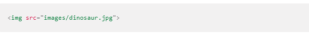
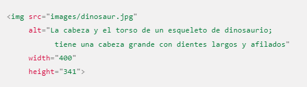
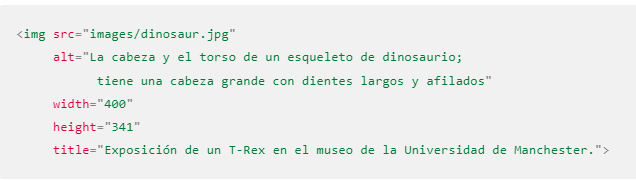

<!DOCTYPE html>
<html lang="en">
<head>
  <meta charset="UTF-8">
  <meta http-equiv="X-UA-Compatible" content="IE=edge">
  <meta name="viewport" content="width=device-width, initial-scale=1.0">
  <title>Document</title>
</head>
<body>
  
</body>
</html>
<center>
  <h1 style="color:red;"><u>Imagenes</h1></u>
  
  <p style="text-align: center;">Para poner una imagen simple en una página web, utilizamos el elemento 
"img". Se trata de un elemento vacío (lo que significa que no contiene texto o etiqueta de cierre) que 
requiere de por lo menos de un atributo para ser utilizado: "src" (a veces denominado por su nombre completo, source). 
El atributo src contiene una ruta que apunta a la imagen que quieres poner en la página, que puede ser una
URL relativa o absoluta, de la misma forma que el elemento "a" contiene los valores del atributo href</p>
  
  <h2><u>Ejemplos de como poner imagenes personalizaadas</u></h2>
  
  <p><li><u> Anchura y altura:</u> Puedes usar los atributos ancho (width) y alto (height) para especificar la
anchura y altura de tu imagen. Puedes encontrar el ancho y el alto de tu imagen de diversas maneras.
Por ejemplo, en Mac puedes usar Cmd + I para mostrar información del archivo de imagen. Volviendo a nuestro 
ejemplo, podríamos hacer esto:</p></li>
  <li><u>Título de imágenes:</u> Al igual que con los enlaces, también puedes añadir atributos title a las
  imágenes para proporcionar más información de ayuda si es necesario. 
  En nuestro ejemplo, podríamos hacer esto:</li></p>
  